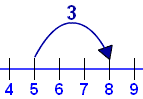
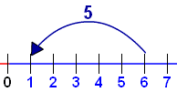
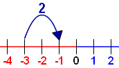
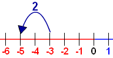

Using The Number Line
images/number-line.js?mode=int
We can use the Number Line to help us add:
|  |
5 + 3 = 8 |
And subtract:
|  |
6 − 5 = 1 |
It is also great to help us with negative numbers:
|  |  |
−3 + 2 = −1 |
−3 − 2 = −5 |
So when we get puzzling questions like "What is −6 plus 3" we can use the number line!
More Examples:
images/number-line-using.js?mode=ex
Try It Yourself:
Drag the points, see how it all works:
images/number-line-using.js?mode=user
What Is Next
Sometimes we get questions like
3 + (−6)
Plus and Minus together?
Read How to Add and Subtract Positive and Negative Numbers to find what to do.
1977, 1978, 1979, 1980, 5062, 5063, 5064, 5065, 5066, 5067